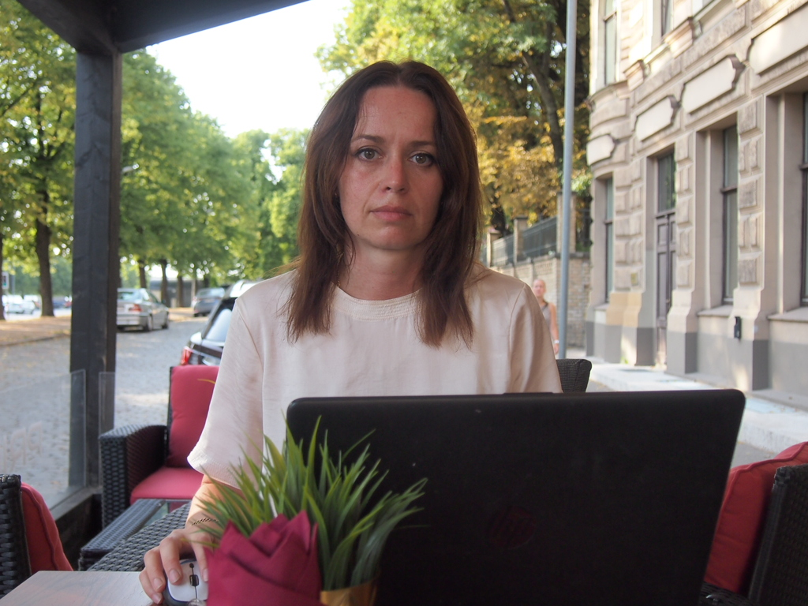

До недавнего времени я работала в области финансов. Познакомившись с WEB разработкой, я решила сменить сферу деятельности. Меня увлекает процесс работы и возможность непрерывно развиваться. Мне интересно выполнять широкий круг обязанностей и видеть результаты своей работы. Меня вдохновляет возможность работы с визуальной частью. Но, все-таки, я ориентируюсь на Back-end, так как в данной области я смогла бы применить свой предыдущий опыт и новые знания в области IT и контента. Закончив различные IT курсы и приобрела теоретические знания и практические навыки работы с сайтами.